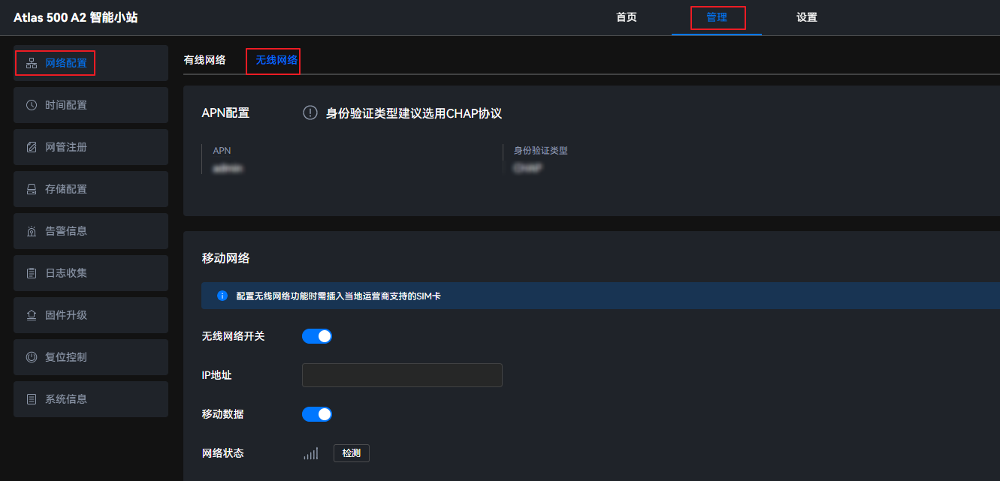
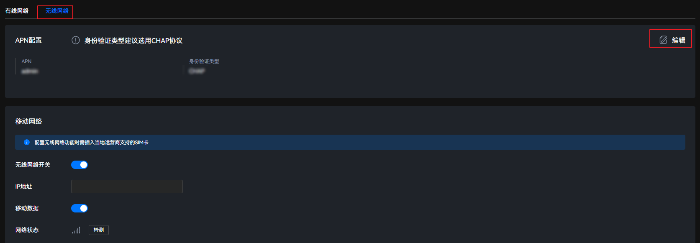
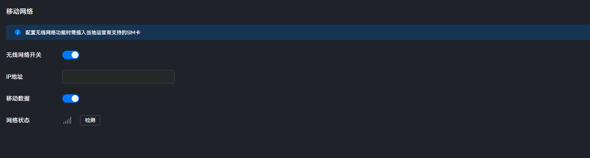

使用场景
当Atlas 500 A2 智能小站配有无线网络模块时（默认为一个4G或5G无线网络模块），用户可在Atlas 500 A2 智能小站中插入SIM卡，通过配置无线网络功能，进行网络连接。
注意事项
- 无线网络会配置默认网关。故在已经配置网口0或网口1~4网关的情况下，打开无线网络前，需要修改网口0或网口1~4的路由配置。修改方法请参考“打开Wireless_Module前配置网口路由信息”章节。
- 打开无线网络后，不可以再对网口0或网口1~4配置默认网关，否则会引起无线网络中断。
- 当前不支持在同一设备上同时安装4G和5G无线网络模块，否则可能导致无线网络功能异常。
配置APN

每次更换SIM卡，需要重新配置APN参数。
- 在主菜单中选择。图1 无线网络页面
 - 单击“APN配置”的右上角“编辑”。图2 APN配置
根据界面提示配置参数，配置项参考表1。 - 单击“保存”。
配置无线网络
配置无线网络功能时需要插入当地运营商支持的SIM卡。
- 在主菜单中选择。图3 无线网络页面
- 在“移动网络”区域配置无线网络功能参数。图4 移动网络
